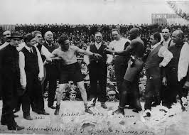
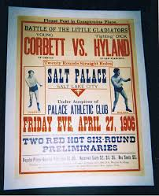
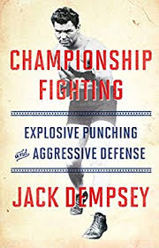
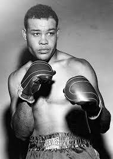
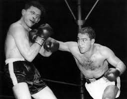
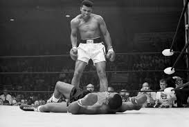
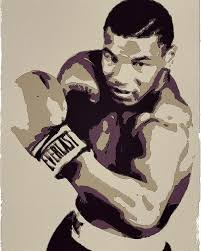
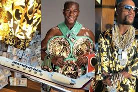

RINGCRAFT
What is boxing? Is it a sport or a tradition? A brutal slugfest or a game of sophistication? To the ordinary person's eye, boxing can appear to be both. Fighters exchange of punches with desperation or malice, while they also magically happen to dodge and catch their opponents off guard, piercing through their myriad of movements. It is hard to encapsulate what the sport is at its core, and even harder to express it to someone who has no interest or experience in the sport. But looking back through the ages of this craft, one may begin to understand how boxing developed into the sport it is today.
Part 1: The (G)Olden Age
Chapter 1: Prize Fighting
Fist fighting can be traced back to the Ancient Greeks who fought by wearing metal gauntlets on their hands, and was later revitalized by the Romans in their attempt to revive ancient Greek culture. Over a millenia from 600 A.D. through
the Middle Ages, various European cultures had their own take on bare-knuckle fighting and developed their own styles. Eventually, bare-knuckle fighting began to adopt more order and structure, and once fighters began to compete in a square
arena(this is where the term “boxing” stems from) and began to fight in accordance to the Queensbury Rules(matches were set according to weight, fighters wore padded gloves, bouts lasted a certain number of rounds, etc.), the foundations of
modern boxing were laid out.


Chapter 2: Old School Slugging
Over the course of thirty years, boxing as a sport developed from crude brawling to become more refined as fighters began to experiment and hone their craft. One of the most famous of these fighters was Jack Dempsey, who was one of the most powerful heavyweight fighters during the 1920s, and was glorified for his victory against the 6’6” behemoth Jess Willard(in contrast, Dempsey was 6’1” and was outweighed by fifty pounds). The knockout victory earned boxing more respect as a sport that relied on technique and skill rather than brute force. Dempsey literally wrote the book on boxing, detailing how he could throw punches that took down a giant.

Chapter 3: The birth of Out-Boxing
If at first you don’t succeed, try and try again. Joe Louis, in the first year of his career, was defeated badly by Max Schmeling, the reigning champion, and Louis had to rethink his approach and evolve his boxing. Two years later, Louis came back challenged the champ once again, only this time, he had sharpened a weapon that would change the game. Joe Louis’s jab(the quick punch thrown by the front arm) was the most powerful tool crafted till that point, and Louis’ technique of circling opponents while jabbing, otherwise known as out-boxing, would become popular in the coming eras.

Chapter 4: You got to have Heart, Kid
Old time fighters were known for their tenacity and determination when in the ring. Often, due to their unwillingness to give in to defeat, fighters would become disfigured and suffer greatly from their injuries for their entire lives. Regardless, old fighters were a testament to the human spirit and allowed a generation to dream. One of these fighters was Rocky Marciano, the real Italian Stallion who never lost a fight, even if it cost him a nose and his health. Although being one of the smallest heavyweights ever, the division feared his power, and more so, his inability to move back even an inch when fighting.

After world war two, America had become one of the new leading powers in the world, and with that, American culture began to spread world-wide as well. Pockets of boxing culture started forming in all sorts of places in the world, resulting in unique, regional styles and new fighters who continue to take boxing further and further.
Part 2: The New Age
Chapter 5: Float like a Butterfly, Sting like a . . .
Gold was as good as last. This was the thought that went through Muhammad Ali’s mind as he flung his Olypmic medal into the Ohio river after having been refused service yet again. In a world that was unjust, Ali never trusted his footing in life and came to the conclusion that unless he stood on top of the world, he would always be in the gutters of society. Known for his flamboyant antics and zealous attitude, Ali would often employ psychological games with his opponent to make them act rashly before he would use his dance-like footwork to out-box them and land the knockout blow. His attitude towards life, choosing to forge his own path to claiming the world title multiple times to prove his worth to the world without any room for compromise, memorialized Muhammad Ali and inspire generations to this day to reach farther than your hands can reach.

Chapter 6: Four Kings
As the technical demand grew to be skillful at boxing, the glory of boxing shifted from the heavier weight classes to the lighter ones, where fighters could still produce power while being unburdened of excess weight. This new era was ruled by the “Four Kings”, Roberto Duran, Sugar Ray Leonard, Marvin Haggler, and Thomas Hearns, who ruthlessly took over many weight divisions with little to challenge them except each other. Eventually, when each of them did fight each other, the clash of technique and skill was so astounding that even to this day, certain boxing enthusiasts claim that this area was where the real glory of boxing lay.
Chapter 7: The Coldest Eyes
Born in one of the poorest and most broken neighborhoods in New York, young Mike Tyson enjoyed looking after pigeons in his free time. One day, when he came back to find his pigeons had been killed by a couple delinquents, Mike Tyson was reborn after discovering his natural fighting ability. Tyson became the youngest heavyweight champion in history, at the age of 20, and ruled an era with his ferocious demeanor and his high-intensity boxing. Tyson would weave his whole body to avoid punches and set up punches for his next shot, and became widely acclaimed for being able to KO fighters in a matter of seconds. But it seemed unlike Ali, Tyson’s attitude was not charismatic or pleasant but always hostile and intimidating. Tyson ruled an era through fear and intimidation, and his Stalin-like ruthless nature is what many modern day boxers try to encapsulate in themselves.


Chapter 8: Money in my Pockets
In the modern day, boxing has lost some popularity due to the rise of Mixed-Martial arts and the concerns of the safety of combat sports, and some say that although there are more fighters than ever before, the best of boxing has already passed and there isn't much to look forward to for the future. Floyd Mayweather would beg to differ. Holding the record for most number of victories without losing, Mayweather stands as boxing’s golden child, constantly drawing in crowds when the money's right. He showed how to fight and win without becoming injured in life altering ways, and he has helped to shift the boxing in a direction that values safety without sacrificing the ability to climb higher.

In this new era, little is known of what's to come. Will boxing rise once again to become the shining beacon it once was in the past? Will it fall away into the dust and not rise again? All we know is boxing's history, and it's deep roots and impact on the world as we know it.